FMAM rainfall domain review fmam_chirps_domain_review_v1
CHIRPS v2.0 1993–2025 · built 2026-10-10T01:54:29+00:00 · fingerprint 593fe8a11619
Selected candidate: mm100_share20 — Adopted 2026-10-10 as the main FMAM working domain for Ethiopia: Belg brings considerable rain (EMI: northeastern, central, southern, southwestern, eastern and southeastern Ethiopia). Both cutoffs are EMI legend breaks (101-200 mm; 21-30 %), so EMI maps 2(e)/3(e) can check the largest share of the country; stable against the 1996-2025 baseline.
1. Climatology
Ratio of climatological means from actual-calendar monthly totals (February 29 included); every year of the period required per cell.
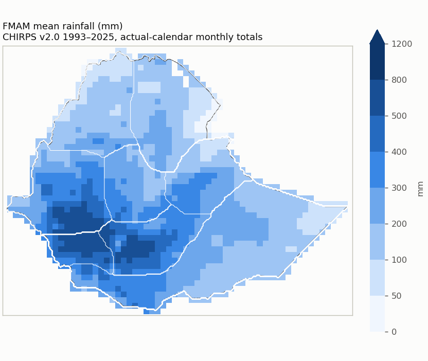
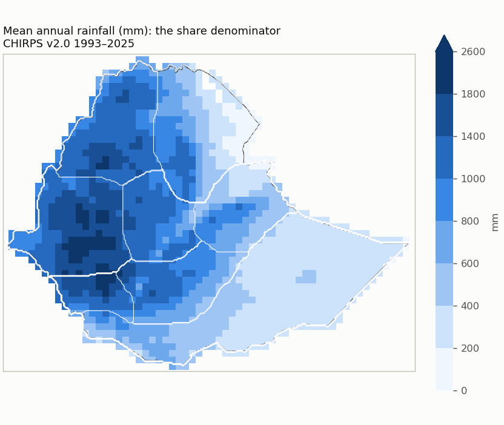
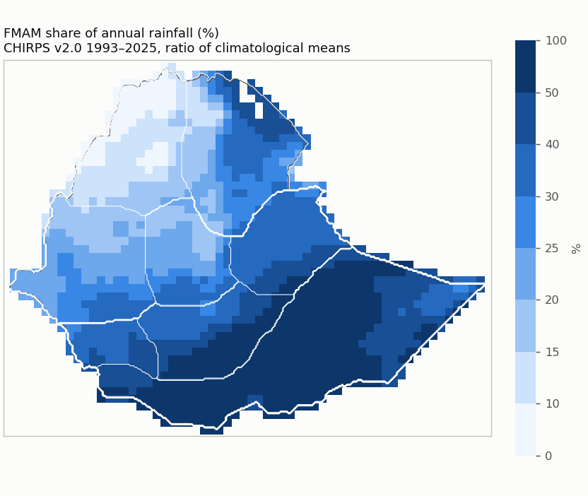
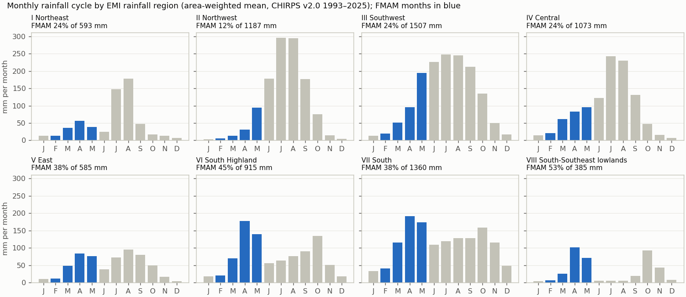
Reference periods
| Period | Status | Note |
|---|---|---|
| 1993-2025 | available | |
| 1981-2010 | unavailable | 12 of 30 years are not in the data (1981-1992); the period is not shortened. |
| 1991-2020 | unavailable | 2 of 30 years are not in the data (1991-1992); the period is not shortened. |
| 1996-2025 | available |
Quality control
| Check | Result | Detail |
|---|---|---|
| Calendar | passed | Annual monthly-total sum minus the 365-day cycle sum: zero in non-leap years, Feb 29 rain (>= 0) in leap years. |
| Units | mm | mm (monthly accumulation of daily mm amounts; no rate conversion) |
| Years | 1993–2025 (33) | gaps: none |
| Completeness | 6 cells | Cells touching Ethiopia whose CHIRPS record is not complete for every year and month. |
| Area | 1,129,938 km² | 3.6 km² beyond the grid; cell bounds intersected with the Ethiopia polygon, WGS84 geodesic areas |
| Source | CHIRPS v2.0 | sha256 d9ec8ba9fbea6a50… |
| Nested candidates | yes | raising either cutoff never adds a cell |
2. References
Registered EMI climatology panels (climatologies printed in a 2026 publication; their averaging period is not documented). The comparison mode follows the evidence: drafts stay visual only.
| Reference | Mode | Why not higher | Digitization | Outline IoU | Control / check RMSE (km) | Document |
|---|---|---|---|---|---|---|
| emi_belg_map_2e | visual_only | georeferencing and legend classes not reviewed | draft | 0.971 | 25.4 / 63.0 | 2fbeb7261fec |
| emi_belg_map_3e | visual_only | georeferencing and legend classes not reviewed | draft | 0.996 | 5.5 / 8.1 | 2fbeb7261fec |
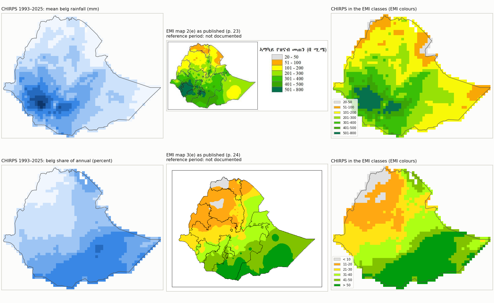
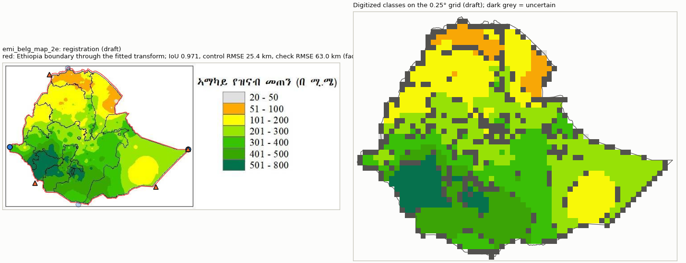
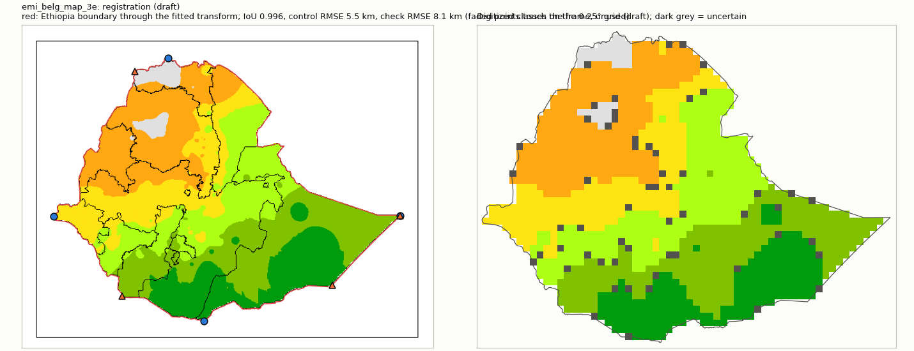
3. Candidate domains
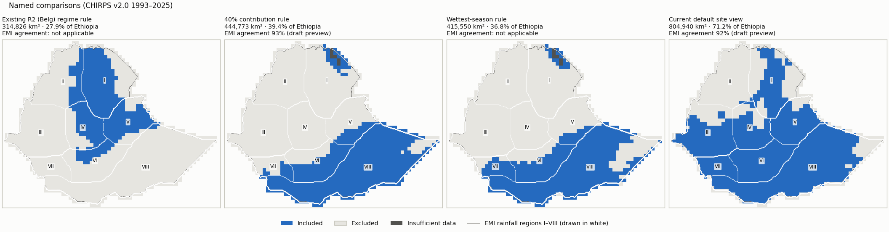
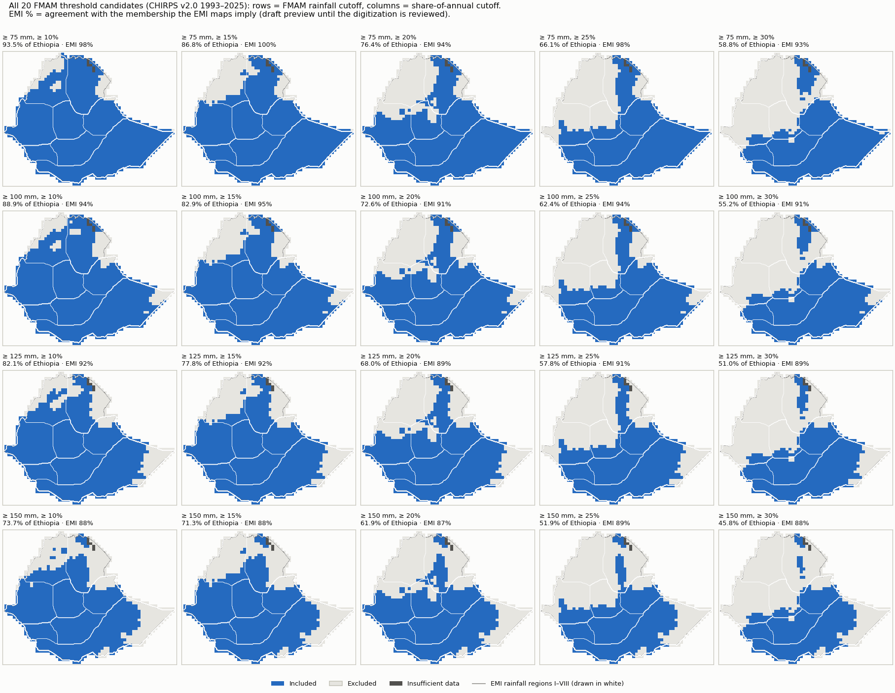
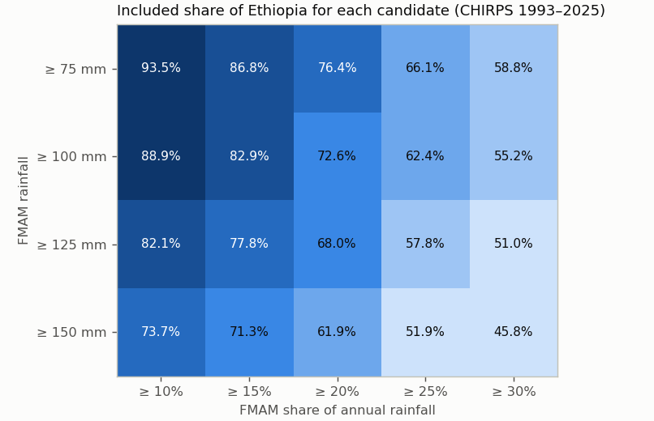
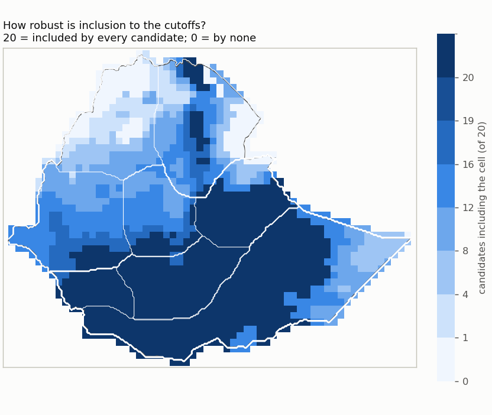
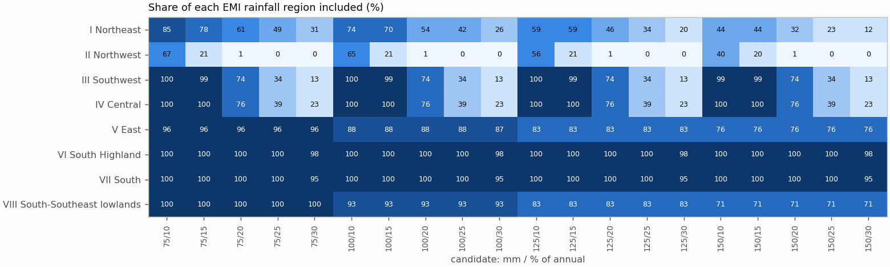
| Candidate | mm | % of annual | Included km² | % of Ethiopia | Unknown km² | Agreement with EMI-implied membership | Baseline change | Files |
|---|---|---|---|---|---|---|---|---|
| mm75_share10 | ≥ 75 | ≥ 10 | 1,056,747 | 93.5 | 4,184 | 98% (visual_only (draft preview)) | 1981-2010: unavailable; 1991-2020: unavailable; 1996-2025: +0/−4,521 km² | NetCDF · GeoJSON |
| mm75_share15 | ≥ 75 | ≥ 15 | 980,433 | 86.8 | 4,184 | 100% (visual_only (draft preview)) | 1981-2010: unavailable; 1991-2020: unavailable; 1996-2025: +0/−8,315 km² | NetCDF · GeoJSON |
| mm75_share20 | ≥ 75 | ≥ 20 | 863,493 | 76.4 | 4,184 | 94% (visual_only (draft preview)) | 1981-2010: unavailable; 1991-2020: unavailable; 1996-2025: +0/−9,857 km² | NetCDF · GeoJSON |
| mm75_share25 | ≥ 75 | ≥ 25 | 747,390 | 66.1 | 4,184 | 98% (visual_only (draft preview)) | 1981-2010: unavailable; 1991-2020: unavailable; 1996-2025: +0/−5,301 km² | NetCDF · GeoJSON |
| mm75_share30 | ≥ 75 | ≥ 30 | 664,078 | 58.8 | 4,184 | 93% (visual_only (draft preview)) | 1981-2010: unavailable; 1991-2020: unavailable; 1996-2025: +0/−14,377 km² | NetCDF · GeoJSON |
| mm100_share10 | ≥ 100 | ≥ 10 | 1,004,330 | 88.9 | 4,184 | 94% (visual_only (draft preview)) | 1981-2010: unavailable; 1991-2020: unavailable; 1996-2025: +0/−6,224 km² | NetCDF · GeoJSON |
| mm100_share15 | ≥ 100 | ≥ 15 | 936,848 | 82.9 | 4,184 | 95% (visual_only (draft preview)) | 1981-2010: unavailable; 1991-2020: unavailable; 1996-2025: +0/−9,274 km² | NetCDF · GeoJSON |
| mm100_share20 | ≥ 100 | ≥ 20 | 820,657 | 72.6 | 4,184 | 91% (visual_only (draft preview)) | 1981-2010: unavailable; 1991-2020: unavailable; 1996-2025: +0/−10,816 km² | NetCDF · GeoJSON |
| mm100_share25 | ≥ 100 | ≥ 25 | 704,554 | 62.4 | 4,184 | 94% (visual_only (draft preview)) | 1981-2010: unavailable; 1991-2020: unavailable; 1996-2025: +0/−6,260 km² | NetCDF · GeoJSON |
| mm100_share30 | ≥ 100 | ≥ 30 | 624,277 | 55.2 | 4,184 | 91% (visual_only (draft preview)) | 1981-2010: unavailable; 1991-2020: unavailable; 1996-2025: +0/−11,556 km² | NetCDF · GeoJSON |
| mm125_share10 | ≥ 125 | ≥ 10 | 927,571 | 82.1 | 4,184 | 92% (visual_only (draft preview)) | 1981-2010: unavailable; 1991-2020: unavailable; 1996-2025: +0/−7,781 km² | NetCDF · GeoJSON |
| mm125_share15 | ≥ 125 | ≥ 15 | 878,728 | 77.8 | 4,184 | 92% (visual_only (draft preview)) | 1981-2010: unavailable; 1991-2020: unavailable; 1996-2025: +0/−13,077 km² | NetCDF · GeoJSON |
| mm125_share20 | ≥ 125 | ≥ 20 | 768,532 | 68.0 | 4,184 | 89% (visual_only (draft preview)) | 1981-2010: unavailable; 1991-2020: unavailable; 1996-2025: +0/−14,619 km² | NetCDF · GeoJSON |
| mm125_share25 | ≥ 125 | ≥ 25 | 653,178 | 57.8 | 4,184 | 91% (visual_only (draft preview)) | 1981-2010: unavailable; 1991-2020: unavailable; 1996-2025: +0/−9,316 km² | NetCDF · GeoJSON |
| mm125_share30 | ≥ 125 | ≥ 30 | 576,679 | 51.0 | 4,184 | 89% (visual_only (draft preview)) | 1981-2010: unavailable; 1991-2020: unavailable; 1996-2025: +0/−14,612 km² | NetCDF · GeoJSON |
| mm150_share10 | ≥ 150 | ≥ 10 | 833,189 | 73.7 | 4,184 | 88% (visual_only (draft preview)) | 1981-2010: unavailable; 1991-2020: unavailable; 1996-2025: +767/−9,086 km² | NetCDF · GeoJSON |
| mm150_share15 | ≥ 150 | ≥ 15 | 805,856 | 71.3 | 4,184 | 88% (visual_only (draft preview)) | 1981-2010: unavailable; 1991-2020: unavailable; 1996-2025: +767/−12,872 km² | NetCDF · GeoJSON |
| mm150_share20 | ≥ 150 | ≥ 20 | 699,420 | 61.9 | 4,184 | 87% (visual_only (draft preview)) | 1981-2010: unavailable; 1991-2020: unavailable; 1996-2025: +767/−15,920 km² | NetCDF · GeoJSON |
| mm150_share25 | ≥ 150 | ≥ 25 | 586,606 | 51.9 | 4,184 | 89% (visual_only (draft preview)) | 1981-2010: unavailable; 1991-2020: unavailable; 1996-2025: +767/−9,864 km² | NetCDF · GeoJSON |
| mm150_share30 | ≥ 150 | ≥ 30 | 516,957 | 45.8 | 4,184 | 88% (visual_only (draft preview)) | 1981-2010: unavailable; 1991-2020: unavailable; 1996-2025: +767/−12,892 km² | NetCDF · GeoJSON |
Named comparisons
| Rule | Included km² | % of Ethiopia | Agreement with EMI-implied membership | Files |
|---|---|---|---|---|
| Existing R2 (Belg) regime rule: R2 membership, FMAM >= 80 mm, patches < 3 cells removed | 314,826 | 27.9 | Regime membership is not an amount/share threshold, so EMI classes imply no membership for it. | NetCDF · GeoJSON |
| 40% contribution rule: FMAM >= 40% of annual and >= 80 mm (no cleanup) | 444,773 | 39.4 | 93% (visual_only (draft preview)) | NetCDF · GeoJSON |
| Wettest-season rule: FMAM wetter than JJAS and ONDJ, >= 80 mm (no cleanup) | 415,550 | 36.8 | Wettest-season membership compares FMAM with JJAS and ONDJ; the EMI maps give no JJAS/ONDJ amounts. | NetCDF · GeoJSON |
| Current default site view: >= 20% and >= 100 mm from the 365-day cycle, patches < 3 cells removed | 804,940 | 71.2 | 92% (visual_only (draft preview)) | NetCDF · GeoJSON |
Domain files: one NetCDF (membership codes: 1 included, 0 excluded, -1 insufficient data, -2 outside Ethiopia) and one GeoJSON outline (cells clipped to the border) per domain, in domains/. They are review candidates, not operational masks.
4. Assessment
Reference agreement
| Reference | Mode | Exact class | Within one class | CHIRPS wetter / drier | Outside-interval median / p90 | Comparable / uncertain area |
|---|---|---|---|---|---|---|
| emi_belg_map_2e | visual_only (draft preview) | 54% | 90% | 9% / 37% | 0.0 / 98.2 mm | 914,730 / 201,785 km² |
| emi_belg_map_3e | visual_only (draft preview) | 66% | 98% | 21% / 12% | 0.0 / 6.3 pp | 1,065,846 / 40,026 km² |
Agreement with EMI-implied membership counts only area where the EMI class lies entirely on one side of a cutoff (half a legend unit tolerance); straddling classes are undecided, never guessed.
Largest changes between neighbouring cutoffs
| From | To | Changed cutoff | Area switching |
|---|---|---|---|
| mm75_share15 | mm75_share20 | annual share percent | 116,940 km² |
| mm100_share15 | mm100_share20 | annual share percent | 116,191 km² |
| mm75_share20 | mm75_share25 | annual share percent | 116,103 km² |
| mm100_share20 | mm100_share25 | annual share percent | 116,103 km² |
| mm125_share20 | mm125_share25 | annual share percent | 115,354 km² |
| mm150_share20 | mm150_share25 | annual share percent | 112,814 km² |
| mm125_share15 | mm125_share20 | annual share percent | 110,195 km² |
| mm150_share15 | mm150_share20 | annual share percent | 106,436 km² |
| mm125_share10 | mm150_share10 | seasonal rainfall mm | 94,382 km² |
| mm75_share25 | mm75_share30 | annual share percent | 83,312 km² |
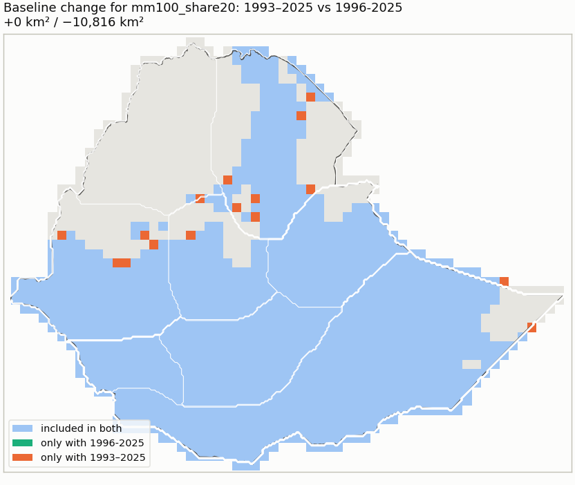
Dataset sensitivity: not assessed (CHIRPS only). Forecast skill is reported for a selected domain but never used to move its boundary.
Inputs
{
"review_config": "42123fc829bd2adc2972a66569f26c72d612ab548f3d00d0cba1e4e98f159527",
"monthly_cache": "406646237fc414145ea137db81464b39a98f48dfc58d6dfd4d5ad77edcc90bb2",
"country_boundary": "96be2b2fc519922d12f4bb5165bad2ad518c2a3f9c8237a4481260d612b12b9f",
"country_mask": "57ad8861c598abb9f175012920e5d0ef058e5b643cd6e4987cad3da6ac0b9e16",
"reference_registry": "297f8b83683b3d12dda180703c63ca9e7e6e7289352e22541aba2127356b7491",
"regions_mask": "a6770d527fe05d756d2b158a8765a5b45e6694bc2e1944f4046a2a0d5d354658",
"comparator:r2_regime_rule": "70b458cab7fe08be352b0c0744b0aa64f6f80eafae0f5cf2a52cc15ad2399088",
"comparator:belg_emi_view": "a10f6ba0d583b29c8802a4431922d1bdd2bc0142d1f08f022d9b92aef44116fd",
"extraction:emi_belg_map_2e": "b58529f7415d840a6d0d50af8d198fbbea505097964dcaa2b30abc7223701d76",
"extraction:emi_belg_map_3e": "aa9ba9c59e588785c1cd51a3d8fbf64d0847319314dea2ef25439a28293f2d7d",
"chirps_source_sha256": "d9ec8ba9fbea6a50e173f04251647c96b5d42fe6ff94936305aa980dcec067cd",
"reference_documents": {
"emi_belg_map_2e": [
"2fbeb7261fec5d6bf3db030cf01694b9f69aa81740b3f637181af729e69a34d2",
"5421fd8123b7cae56d1c2125cadad191db3497bce07d3362cb996316cb2d16c9"
],
"emi_belg_map_3e": [
"2fbeb7261fec5d6bf3db030cf01694b9f69aa81740b3f637181af729e69a34d2",
"4483182ee56a64cde90339785b8c7201e17adc1bfdb49558d5b3d3efe5d7acb6"
]
},
"season_months": [
2,
3,
4,
5
],
"application_period": [
1993,
2025
],
"thresholds": {
"seasonal_rainfall_mm": [
75,
100,
125,
150
],
"annual_share_percent": [
10,
15,
20,
25,
30
]
},
"method_version": "rainfall_domain_review_v1"
}